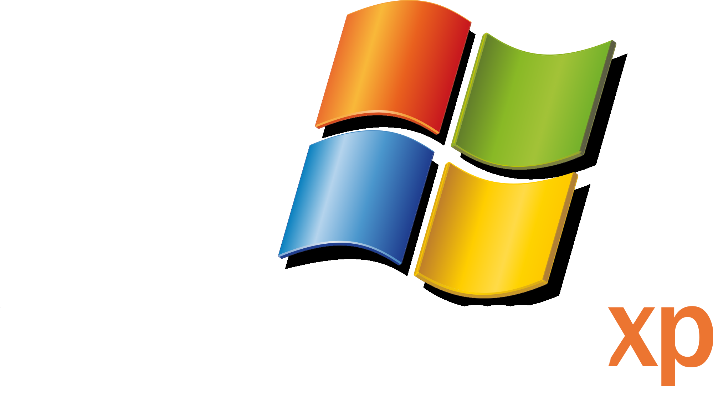

I'm an aspiring web developer who enjoys building things from scratch, like this Windows XP-style portfolio made with HTML, CSS, and JavaScript. I'm currently learning React, TypeScript, and REST APIs, and I'm looking for my first web development role.
I got into coding because of my love for building, creating and being artistic with my projects that I do. Making sure the end result is perfect for anyone who has access to the project.
Aspiring Web Developer | Ottawa, Canada
Computer Programming diploma graduate from Algonquin College with hands-on experience building responsive, cross-browser web applications using HTML5, CSS3, and JavaScript, working with SQL and NoSQL databases, and converting UI/UX designs into clean, well-documented code. Freelance experience managing a project from client discovery through deployment and ongoing maintenance. Developing familiarity with React, REST APIs, and JSON.
Computer Programming Diploma | 2024 – 2026
Algonquin College of Applied Arts and Technology, Ottawa, ON
Radio Broadcasting Diploma | 2015 – 2017
Algonquin College of Applied Arts and Technology, Ottawa, ON
Web Development: HTML5, CSS3, JavaScript, TypeScript, React, REST APIs & JSON, Node.js, npm, PHP
Programming Languages: JavaScript, Python, Java, PHP, SQL, PL/SQL, COBOL, Dart, Cypher
Databases: SQL Server, PostgreSQL, MySQL, Oracle, Microsoft Access, MongoDB (NoSQL), Neo4j
Version Control & Workflow: Git, GitHub
Operating Systems: Windows 11, Linux (Ubuntu, Manjaro)
IDE / Tools: VS Code, Postman, Visual Studio, Eclipse, NetBeans, PyCharm, Android Studio, XAMPP, VMware Workstation, SQL Workbench, pgAdmin4, MongoDB Compass, Microsoft SQL Server Management Studio
Testing & AI Tools: JUnit, Jest, Claude.AI
Dining Room Supervisor | 2022 - Present
Orchard Walk Retirement Home, Manotick, ON
A Letter of Recommendation from Jason Mombourquette, one of my professors.
Download Letter of Recommendation